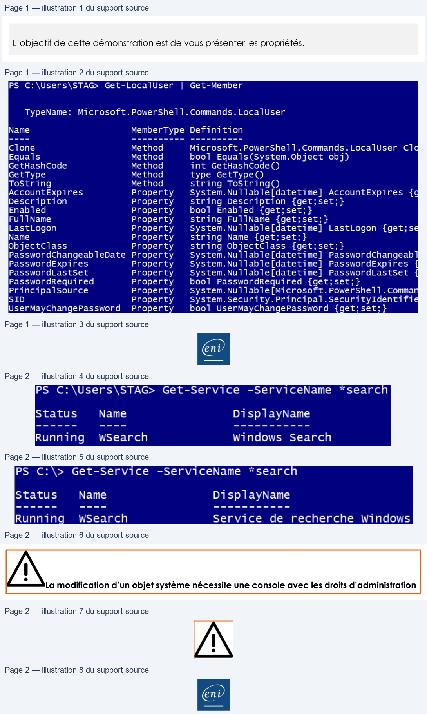

Transcription du document du Drive TSSR. La mise en forme est adaptée au Web ; les compléments IA du portail sont présentés séparément.
Initiation au Scripting avec PowerShell
Démonstration 02 du module 2
L’objectif de cette démonstration est de vous présenter les propriétés.
Chaque objet PowerShell contient des propriétés. La liste de ses propriétés est définie par le type
d’objet auquel il appartient.
• Le type de propriétés est indiqué par la commande Get-Member dans la colonne Definition.
•
Connaître le type de propriété est essentiel pour pouvoir la manipuler.
La propriété Description est de type String ; elle n’accepte donc que les chaînes de caractères.
La propriété PasswordRequired est type Bool ; elle n’accepte que les valeurs de type booléen.
Pour modifier les valeurs d’une propriété, on va dans un premier temps choisir l’objet sur lequel on
souhaite modifier la valeur de la propriété.
Page 1/2
© ENI – Tous droits réservés
PS C:\Users\STAG> Get-LocalUser
|
Get-Member
TypeName:
Microsoft.PowerShe11.Commands.LocalUser
Name
MemberType Definition
Clone
Method
Microsoft. PowerShel1.Commands.LocalUser
Clo
Equals
Method
bool
Equals(System.Object obj)
GetHashCode
Method
int GetHashCode()
GetType
Method
type GetType()
Tostring
Method
string ToString()
AccountExpires
Property
System.Nullable[datetime]
AccountExpires
{g
Description
Property
string Description {get;set;}
Enabled
Property
bool
Enabled {get;set;}
Ful 1Name
Property
string FullName {get;set;}
LastLogon
Property
System.Nullable[datetime]
LastLogon {get;se
Name
Property
string Name {get;set;}
lobjectClass
Property
string ObjectClass {get;set;}
PasswordChangeableDate Property
System.Nullable[datetime]
PasswordChangeab]
PasswordExpires
Property
System.Nullable[datetime]
PasswordExpires
{
PasswordLastSet
Property
System.Nullable[datetime]
PasswordLastSet
{
PasswordRequired
Property
bool
PasswordRequired
{get;set;}
PrincipalSource
Property
System.Nullable[Microsoft.PowerShel1.Comma
SID
Property
System.Security.Principal.SecurityIdentifie
UserMayChangePassword
Property
bool
UserMayChangePassword {get;set;}
En
Initiation au Scripting avec PowerShell
On indique à la commande Get-Service que l’on souhaite uniquement les services contenant search en fin de nom de service.
On obtient la valeur de la propriété DisplayName ici Windows Search.
Pour modifier la valeur, il faut disposer de l’objet de la propriété et de la valeur. On utilise en suite la commande permettant de modifier les valeurs de propriété de l’objet Service.
La commande Set-Service est associée au nom de l’objet service puis à la propriété à modifier et enfin à la valeur de la propriété souhaitée.
La propriété DisplayName est de type String ; nous lui indiquons donc une chaîne de caractères encadrée par les symboles ‘’ ou double quote.
La commande
L’objet
La propriété La valeur de type « String »
On vérifie la bonne prise en compte de la modification.
La modification d’un objet système nécessite une console avec les droits d’administration
Page 2/2
© ENI – Tous droits réservés
PS
C:\Users\STAG>
Get-Service
-ServiceName
*searc
Status
Name
DisplayName
Running
WSearch
Windows Search
rr
rs a
ay
ae
PS C:\> Get-Service -ServiceName “search
Status
Name
Disp layName
Running
WSearch
Service
de
recherche Windows
En
